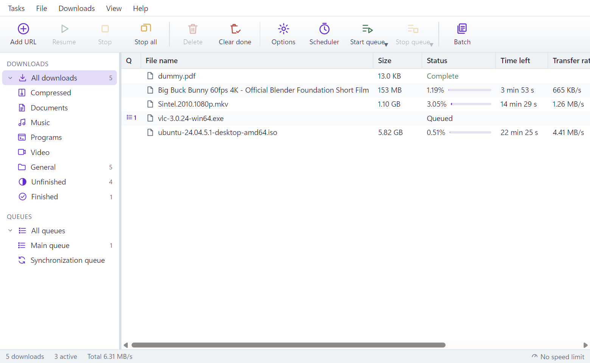

Fast downloads that resume after anything, video from the page you are watching, queues and a site grabber. Free and open source, for Windows.
Download for Windows Windows 10 and 11 · 64-bit · no licence, no ads, no tracking
The best-known download managers sell a licence for each computer, renewed every year. That is why so many people run cracked copies.
Switch to a free one and you lose something: catching video from the page, taking over downloads from the browser, grabbing a whole site, or the speed.
Run the installer, then add the extension for Chrome, Edge or Brave. It connects by itself.
Click a download link or play a video. Keepfetch takes it over and shows the file’s name, size and folder first.
It downloads with several connections at once and picks up where it stopped after a dropped connection, a sleep or a restart.
The first four are what people switching from other download managers asked for most. The rest is everything you would expect.
A download whose link expired picks up from a fresh link to the same file. Open the page it came from, click again, keep what was already downloaded.
Waiting in the notification area, Keepfetch uses about 15 MB of memory. It starts by itself when the browser sends it a download.
The tray icon fills up as your downloads do, and the taskbar button shows it too.
A different sound when a download finishes, when one fails and when a queue is done. Your own or Windows’.
.ef2 lists from other Windows download managersEvery feature, on every computer. No trial, no licence key, no ads, nothing sent home. The source code is open under the MIT licence.
Yes. There is no paid version and nothing is locked. It is open source, so you can check what it does.
If it can export an .ef2 file, yes: Tasks › Import. Plain text files with one address per line work too.
Chrome, Edge and Brave, through its extension. Firefox is not supported yet.
It downloads video that web players load openly, from hundreds of sites. It does not download video protected with DRM (most paid streaming), and says so.
No. It checks GitHub for its own updates and for updates of its video component. There is no account, no analytics and no crash reporting. Browser cookies, when you allow them, stay on your computer, encrypted.
Not yet. Keepfetch is for Windows 10 and 11.